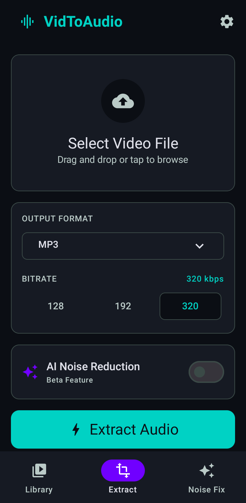
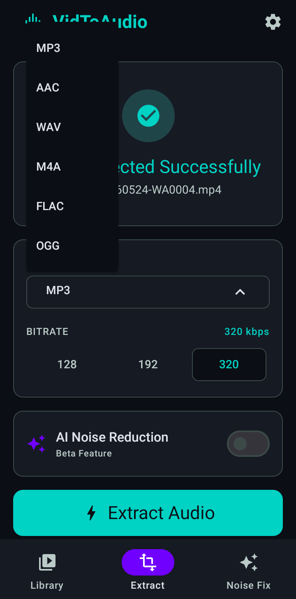
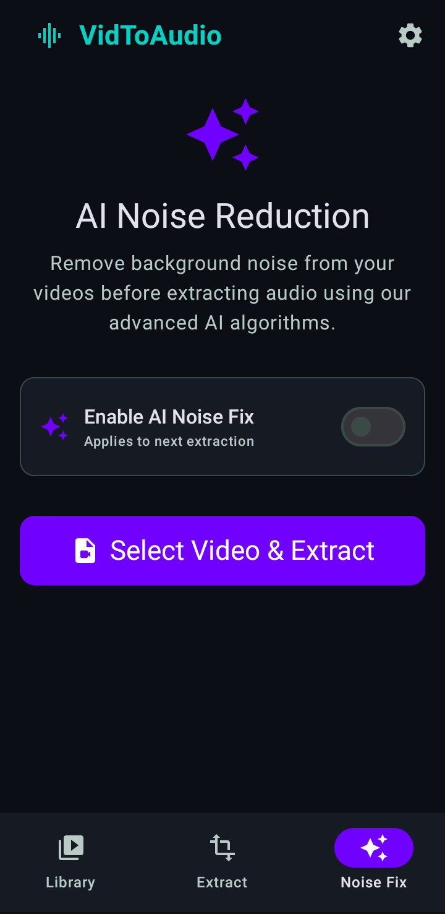
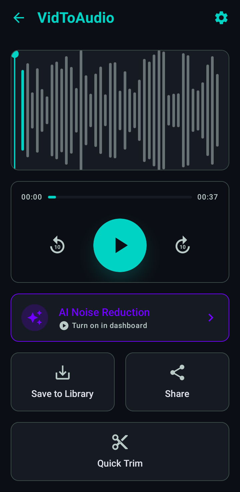
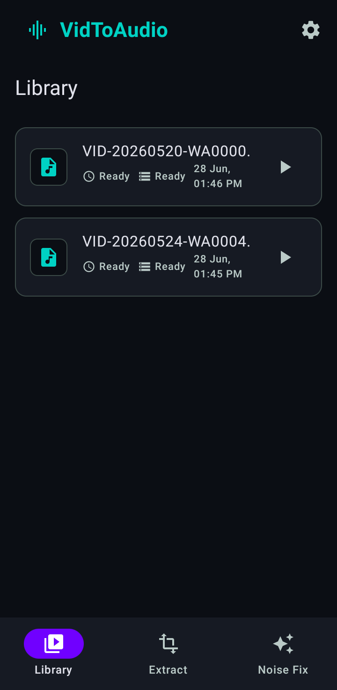
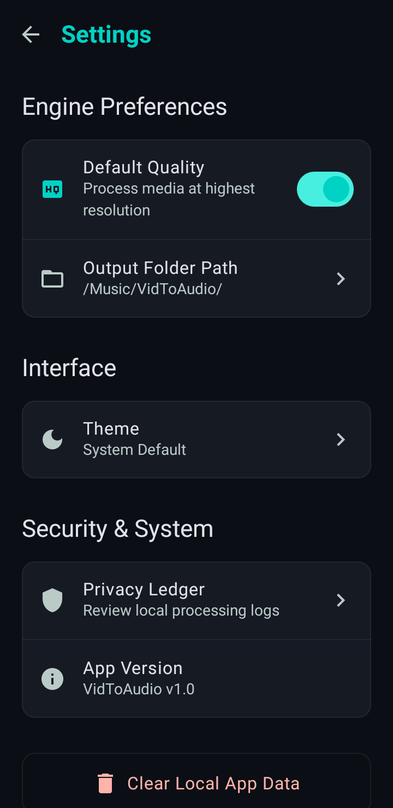

MP4 to WAV Converter
Free, Offline & On-Device
Extract audio from video with zero uploads. Our audio extraction app runs 100% locally on your phone for maximum privacy and speed.
Try it here: Free MP4 to WAV Converter
For best performance, use files under 200MB. Processed entirely in your browser using FFmpeg WASM.
Output: WAV (Lossless, High Quality)
Extracting audio...
Loading FFmpeg core on first run may take a few seconds.
Conversion Complete!
Want batch conversion and AI noise reduction?
Get the VidToAudio Android appWhy We Built VidToAudio
Hi, I'm the developer behind VidToAudio. When I needed to extract audio from video for a project, I found that most "MP4 to WAV free" tools online required uploading my private videos to remote servers. This felt slow, invasive, and completely unnecessary given the processing power of modern smartphones.
I built this offline audio converter to utilize true on-device processing. It runs entirely on your phone's CPU. No uploads, no waiting in server queues, and total privacy for your files. We even added a Privacy Ledger directly in the app settings so you can verify that zero bytes of your media are ever transmitted over the network.
Last Updated:
How It Works (Real App Flow)

Select Video Screen1. Select Video
Pick any MP4 or video file straight from your gallery or local file manager.

Extract Screen2. Choose Format
Select WAV, MP3, AAC, FLAC, M4A, or OGG. Set your preferred bitrate quality audio export (128, 192, 320 kbps).

Noise Reduction Screen3. Enable AI Noise Reduction
Optional: Toggle the Beta AI feature to clean up background static before extraction.

Library & Trim4. Extract & Trim
Extract instantly. Use the Quick Trim feature to cut the audio, then find it in your Library history.
Engineered for Audio Fidelity
Format Compatibility
Extract audio to MP3, AAC, WAV, M4A, FLAC, or OGG. Lossless formats like WAV and FLAC maintain absolute original quality without compression artifacts.
Bitrate Quality Control
User selectable export quality allows you to choose between 128 kbps for small file sizes, 192 kbps for standard listening, and 320 kbps for premium audio fidelity.
AI Noise Reduction (Beta)
Our on-device neural engine automatically detects and removes background hums, wind, and static, keeping vocals crystal clear and isolated.
Quick Trim & Waveform
Preview your extraction with a visual waveform. Use the 10s rewind/forward playback controls to trim exactly the portion you need before saving to disk.
Library Management
The built-in Library shows your converted files history, complete with filename, status, and date/time. Easily configure a custom output folder path.
Privacy Ledger
Review local processing logs in real-time within the settings. We provide full transparency to prove that zero bytes ever leave your device during extraction.
App Interface & Transparency
See exactly what you get. A clean, native Android interface designed for rapid audio conversion without the clutter.
Extract & Format Setup

Converted Library
AI Noise Reduction

Settings & Privacy Ledger
Why On-Device vs Online Converters?
When you use a standard website to convert video to audio without internet, you are actually uploading your personal videos to their remote servers. This consumes your mobile data limit, takes much longer depending on your connection, and exposes your private media to unknown third parties.
VidToAudio functions as a true native offline audio converter. By running the extraction algorithms locally on your Android device's CPU, we eliminate upload times entirely, save your cellular data, and guarantee absolute 100% privacy.
Frequently Asked Questions
Does VidToAudio need internet?
No, VidToAudio is a completely offline audio converter. All conversions happen on your device's hardware, meaning you can convert video to audio without internet access or cellular data.
What formats are supported?
You can extract audio into multiple output formats including MP3, AAC, WAV, M4A, FLAC, and OGG. Lossless formats like WAV and FLAC are highly recommended for preserving original quality.
Does noise reduction affect voice quality?
Our AI Noise Reduction (currently in Beta) is specifically tuned to isolate human vocals and preserve audio fidelity while aggressively removing background hums, wind, and static.
Is there a file size limit?
Because VidToAudio utilizes on-device processing instead of cloud servers, there are no artificial file size limits. You are only limited by your phone's available storage and RAM.
Where are converted files saved?
Converted files are saved directly to your phone's local storage. You can set a custom output folder path in the app settings, and quickly view or play all your files in the built-in Library section.
Does VidToAudio require a subscription?
No, the core MP4 to WAV converter and extraction features are completely free to use. There are no mandatory subscriptions to extract audio from video.